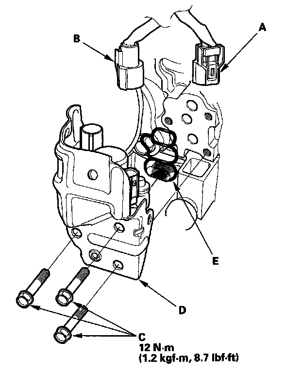

Variable Valve Timing Solenoid: Service and Repair
Rocker Arm Oil Control Valve Removal/Installation1. Remove the cowl cover and under-cowl panel.

2. Disconnect the rocker arm oil control valve connector (A) and the rocker arm oil pressure switch connector (B).
3. Remove the bolts (C).
4. Remove the rocker arm oil control valve (D).
5. Install the parts in the reverse order of removal with a new rocker arm oil control valve filter (E).